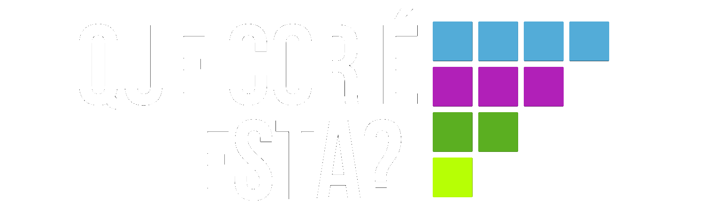
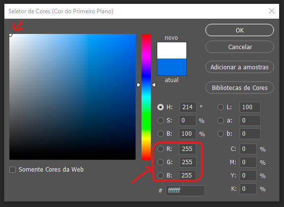
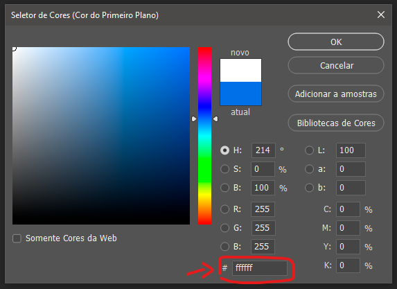

Descubra o código de cor de qualquer imagem
Neste site é possível obter o código de cor RGB a partir de qualquer imagem. Clique no campo abaixo e insira uma imagem, posteriormente clique em qualquer parte da imagem para obter o código de cor RGB, HSL ou HEX do ponto clicado.
Posição do mouse
Cor selecionada
-Código de cor-
Códigos de cor são uma maneira numérica de descrever as cores em um sistema de cores.
A maioria dos modelos de cores possui 3 dimensões, como a mais conhecida:
RGB. De Vermelho, Verde e Azul.
O que é RGB?
RGB é a sigla do sistema de cores aditivas formado pelas iniciais das cores em inglês Red, Green e Blue, que significa em português, respectivamente, Vermelho, Verde e Azul.
O sistema de cores luminosas RGB (também designado por cor-luz) é usado nos objetos que emitem luz como, por exemplo, os monitores de computador e televisão, as câmeras digitais, o scanner, entre outros.
As cores são obtidas através das misturas das três cores primárias, em quantidades determinadas. Cada uma das cores obtidas estão enquadradas numa escala que varia de 0 a 255. Quando a mistura das três cores está no valor mínimo (0, 0, 0), o resultado é a cor preta. Quanto está no máximo (255, 255, 255), resulta na cor branca.
A variação entre valores mínimos corresponde a tons escuros e entre os valores máximos, os tons são mais intensos, mais claros.
O que é HSL?
O padrão HSL é representado por Hue (tom), Saturation (saturação) e Lightness (luminosidade). O valor do tom é medido em ângulos expresso em graus. O valor de saturação é medido em porcentagem, sendo 0% um leve sombreado de saturação e 100% uma saturação total da cor. O valor de luminosidade também é expresso em porcentagem.
O HSL foi projetado para ser legível por humanos e está ganhando popularidade, principalmente como uma alternativa RGB.
Na prática, a matiz significa cor e usa os graus da roda de cores para indicar a cor que você está usando. Se você conhece a roda de cores e as posições dessas cores principais, deve ser capaz de dizer que 45 parecerá laranja e 270 parecerá roxo apenas pensando nisso por um segundo.
O que é HEX?
O padrão de cor HEX, ou hexadecimal, tem sintaxe muito mais curta que a RGB e HSL. Além disso, não possui todas as vantagens que as outras especificações nos dão, começando pelo canal alpha. Contudo, com o HTML e a grande maioria dos programas visuais dando suporte ao formato hexadecimal ele ainda perdurará durante muito tempo ainda em nossas vidas.
O código Hexadecimal para cores consiste em seis letras ou números precedidos do “#” e seus números significam:
Os dois primeiros elementos representam a intensidade de vermelho; O terceiro e quarto elementos representam a intensidade de verde; Os dois últimos a intensidade de azul. Desta forma, o resultado final será a combinação dessas três cores em diferentes intensidades, formando a cor desejada. Os valores variam entre 00 (mais escuro) até FF (mais claro).
Por exemplo, temos o código #FFFFFF, que representa a cor branca, pois tem a intensidadeMovi máxima das três cores. Do mesmo modo, #FF0000 representa a cor vermelha, com intensidade máxima de vermelho e nenhuma intensidade para verde e azul.
